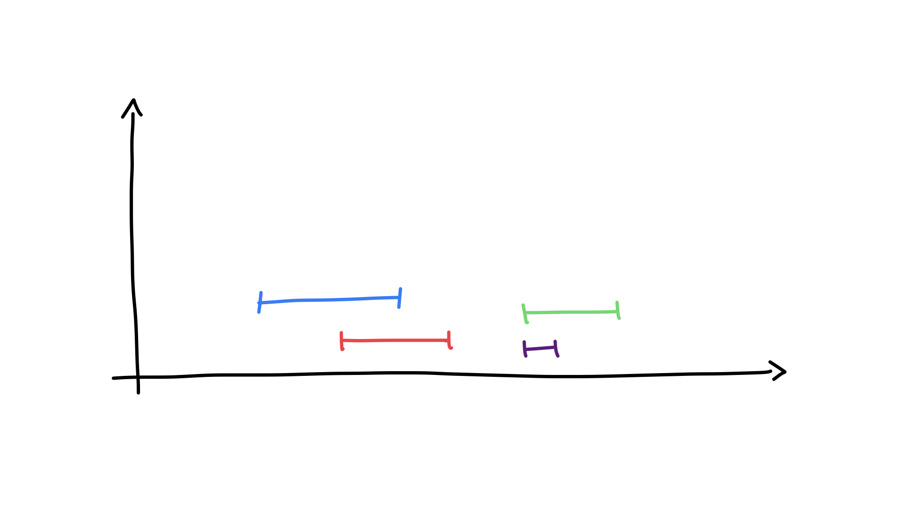
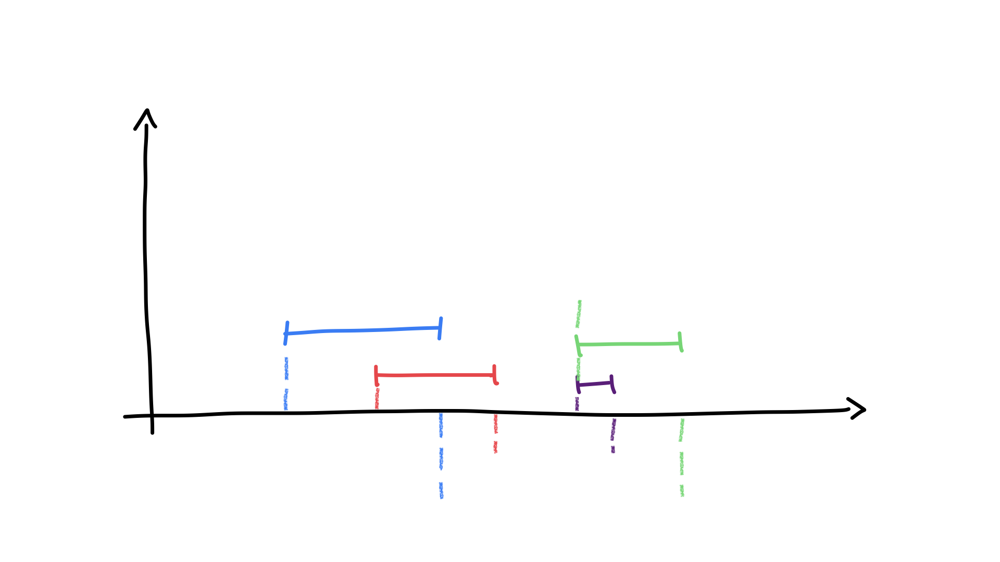

2022-05-12
Il y a quelques jours j’ai commencé à faire des challenges sur HackerRank, notamment à la suite d’un entretien avec une boîte internationale. (Toujours en cours d’ailleurs ^^).
Ici, je m’intéresse à l’idée de représentation intermédiaire des données.
Je vais commencer par décrire les conditions de l’exercice ainsi qu’une première solution simpliste. Ensuite on va voir comment créer un algorithme plus performant en transformant un petit peu les données initiales en amont pour en faciliter le traitement en aval.
Cet article est un peu long comparé au sujet qu’il entend traiter. En fait, je me concentre plus sur l’explication de ma démarche que sur le problème proprement dit.
Je donne des exemple en NodeJS comme c’est un langage relativement générique.
Dans ce challenge1 (que je vous conseille de faire d’ailleurs), on commence avec deux données, un grand tableau rempli de zéros et une liste de “queries” (ou “requêtes”). Chaque requête transforme une partie du tableau.
Une query est composée de trois éléments: une position de départ, une position de fin et une valeur. Pour chaque requête, on ajoute sa valeur aux cases du tableaux qui sont entre la position de départ et la position de fin.
 Je me représente les requêtes comme ça. Plus une requêtes est haute plus la valeur à ajouter est élevée. L’axe des abscisses représente les indices du tableau.
Par exemple, si j’ai une requête [3, 9, 7] alors j’ajoute 7 à toutes les cases de 3 à 9 inclues. (Ici les indices partent de 1.)
/**
* Éxecutons cette requête sur un tableau de
* 20 éléments.
*/
let tab = new Array(20).fill(0)
let query = [3, 9, 7]
let [left, right, value] = query
for (let i = left-1; i < right; i+=1) {
tab[i] += value
}L’objectif de l’exercice est d’éxecuter toutes les requêtes et de retourner le plus grand nombre du tableau après les transformations.
Ma première tentative a été de faire le calcul de la manière la plus simple possible. C’est-à-dire, pour chaque requête, d’itérer sur les cases correspondantes et d’ajouter la valeur. Exactement comme je l’ai fait au-dessus.
Dans le pire des cas, cet algorithme est de complexité \(O(N^2)\). En effet, pour chaque itération sur les requêtes, on fait un certain nombre d’itérations sur le tableau à transformer.
C’est cet algorithme que j’ai utilisé en premier. Il passait la plupart des tests d’HackerRank mais prenait trop de temps sur 3 ou 4 d’entre eux.
Il faut donc trouver un meilleur algorithme du point de vue des performances. Idéallement \(O(N)\).
Initialement, le tableau sur lequel on agit et la liste des requêtes sont deux entités séparées en mémoire.
Le tableau associe à chaque indice une valeur, et les éléments de la liste des requêtes associent à certains indices une valeur à ajouter.
Si on est sur une case du tableau au hasard, comment savoir quelles valeurs lui ajouter ? En cherchant toutes les requêtes qui s’appliquent à cette case ? Et ceci pour chaque case ? Toutes ces itérations peuvent certainement être évitées.
Peut-être faudrait-il changer l’organisation des données pour mieux les traiter ?
En se posant la question des représentations intermédiaires que l’on peut créer à partir des données à disposition et de l’énoncer de l’exercice, on peut résoudre ce problème d’efficacité.
Une représentation intermédiaire, c’est juste une manière de “pré-traiter”, de transformer des données afin d’en faciliter la manipulation.
Dans une prochaine section, on va créer cette représentation intermédiaire de manière à “embarquer” toutes les requêtes dans le tableau initial. L’étape finale consistera à parcourir, d’une manière ou d’une autre, ce nouveau tableau pour calculer la valeur finale de chaque case.
J’ai dis plus haut que les deux structures de données initiales associent des valeurs à des indices.
C’est un peu comme si on avait des fonctions Indice -> Valeur (le tableau) et Indice -> Valeur (les requêtes). Ces “fonctions” peuvent être composées pour en obtenir une seule, peu importe comment cela se traduit en pratique. Notons qu’ici nos fonctions ne sont pas des blocs d’instructions mais des données.
C’est l’objet de la prochaine section: créer une telle structure (ou fonction) et ensuite seulement, trouver un algorithme pour passer de cette structure intermédiaire à la “version finale” du tableau.
On veut “préparer” le tableau pour rendre le calcul final plus facile. Je rappelle que le tableau est rempli de zéros au départ.
Pour chaque requête, on place dans le tableau ce que j’appelerais ici des “marqueurs” (sans définir encore ce que c’est). Un marqueur doit, d’une manière ou d’une autre, contenir toutes les trois informations d’une requête. Je ne veux “perdre” aucune données dans le processus.
Mais comment définir un marqueur ?
D’abord, on veut que chaque marqueur contienne toutes les infos de la requête initiale (la position de départ, celle de fin, la valeur à ajouter).
On pourrait se dire que la meilleure manière de marquer la position dans le tableau est de placer deux marqueurs, un au début et l’autre à la fin de la requête.
/* On itère plus sur toutes les cases, juste deux. */
tab[left] = ?
tab[right+1] = ? // +1 parce que le marqueur se trouve après la fin.Ensuite, la meilleure manière de conserver la valeur d’une requête est de donner cette valeur aux deux marqueurs, plutôt qu’une valeur abritraire qui n’indiquerait rien.
Pour éviter les pertes d’informations, j’ai choisi d’incrémenter avec += plutôt que de recouvrir la case (avec =) au cas où d’autres requêtes n’auraient un indice en commun.
Notez qu’à ce moment du travail, je ne me préoccupe pas vraiment de comment je vais traiter mon nouveau tableau dans le détail; mais je me pose quand même des petites questions pratiques sur les informations dont je pourrais avoir besoin ensuite. C’est pour ça que certains choix semblent arbitraires, parce qu’ils le sont.
Par contre, il y a un petit ennui.
Comment différencier le début d’un intervalle de sa fin, si on ajoute la même chose des deux côtés ?
 Représentation intermédiaire, où toutes les valeurs ont été ajoutées ou soustraites aux emplacements des requêtes. (J’ai laissé les queries pour bien montrer qu’elles se superposent aux marqueurs.)
Et si on soustrayait value à la fin d’une requête au lieu de l’ajouter ? Essayons.
Une fois qu’on a fait ça pour chaque query, on a un genre de représentation intermédiaire du tableau qu’on souhaite obtenir. Cette représentation contient tous les éléments nécessaires pour créer la représentation finale: les indices de début et de fin de chaque query, ainsi que les valeurs associées à chacune d’entre elles.
Admettons que je vous montre d’avance la “courbe” (en orange, les valeurs de chaque case du tableau) qu’on souhaite obtenir:
En la superposant à la représentation intermédaire, je me dis intuitivement qu’il ne manque presque rien pour arriver à cette courbe. Visuellement, le tableau initial donné par l’énoncer contient maintenant toutes les informations qui étaient contenues dans la liste des requêtes: positions et valeurs. C’est une “bonne” représentation intermédiaire qui factorise complètement le tableau et la liste des requêtes en une seule structure.
Maintenant il faut réfléchir à la seconde partie de l’algorithme.
En testant un peu on se rend compte que la dernière opération à effectuer est l’addition, tout simplement. On obtient la représentation finale en additionnant à chaque case la case précédente dans la représentation intermédiaire.
En conclusion, on a eu besoin de parcourir une seule fois la liste des requêtes et une seule fois chaque case du tableau. Au cours de cette seconde itération, on peut aussi identifier la valeur maximale, ce qui est le but du challenge.
Mon implémentation finale est la suivante. J’ai fais une benchmark très archaïque avec un script Bash que vous pouvez télécharger ici sous forme d’archive pour tester. (Nécessite juste Node et Bash.)
// n: taille du tableau
// queries: liste de la forme [[8, 12, 4], [1, 100, 1], ...]
function arrayManipulation(n, queries) {
// Remplir avec des zéros pour éviter les problèmes avec NaN.
let arr = new Array(n).fill(0)
// Étape 1: représentation intermédiaire.
for (const idx in queries) {
const [left, right, to_add] = queries[idx]
// Les indices donnés commencent à 1.
arr[left-1] += to_add
arr[right] -= to_add
}
// Étape 2: représentation finale et recherche de la plus grande
// valeur.
let max = 0
for (const idx in arr) {
// La case à l'indice zéro est déjà à sa valeur finale.
if (idx > 0)
// Il n'est pas nécessaire de sauver
// ces valeurs mais ça ne coûte rien ici.
arr[idx] += arr[idx-1]
if (arr[idx] > max)
max = arr[idx]
}
return max
}Étendre la section
J’avais envie d’expérimenter un peu en représentant le problème à l’aide d’un moteur de base de données. (J’utilise SQLite pour que ça soit rapide à faire.)
Admettons que j’ai les tables suivantes:
CREATE TABLE MY_ARRAY(
ID INT PRIMARY KEY NOT NULL,
VALUE INT NOT NULL
);
CREATE TABLE MY_QUERIES(
ID INT PRIMARY KEY NOT NULL,
LEFT INT NOT NULL,
RIGHT INT NOT NULL,
VALUE INT NOT NULL
);Avec ces données:
INSERT INTO MY_ARRAY VALUES(0,0);
INSERT INTO MY_ARRAY VALUES(1,0);
INSERT INTO MY_ARRAY VALUES(2,0);
INSERT INTO MY_ARRAY VALUES(3,0);
INSERT INTO MY_ARRAY VALUES(4,0);
INSERT INTO MY_ARRAY VALUES(5,0);
INSERT INTO MY_ARRAY VALUES(6,0);
INSERT INTO MY_QUERIES VALUES(0,2,4,10);
INSERT INTO MY_QUERIES VALUES(1,3,6,4);
INSERT INTO MY_QUERIES VALUES(2,0,3,7);Voici une requête SQL utilisant des primitives comme JOIN et GROUP BY qui illustre ce qu’on essaye de faire:
SELECT MY_ARRAY.ID, SUM(MY_QUERIES.VALUE) FROM MY_ARRAY
INNER JOIN MY_QUERIES ON (
MY_ARRAY.ID >= MY_QUERIES.LEFT
AND MY_ARRAY.ID <= MY_QUERIES.RIGHT
)
GROUP BY MY_ARRAY.ID;
-- 0|7
-- 1|7
-- 2|17
-- 3|21
-- 4|14
-- 5|4
-- 6|4
SELECT MAX(VALUE) FROM (
SELECT MY_ARRAY.ID, SUM(MY_QUERIES.VALUE) AS VALUE FROM MY_ARRAY
INNER JOIN MY_QUERIES ON (
MY_ARRAY.ID >= MY_QUERIES.LEFT
AND MY_ARRAY.ID <= MY_QUERIES.RIGHT
)
GROUP BY MY_ARRAY.ID
);
-- 21{kind=link}
{kind=link}
{kind=link}